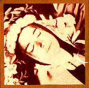
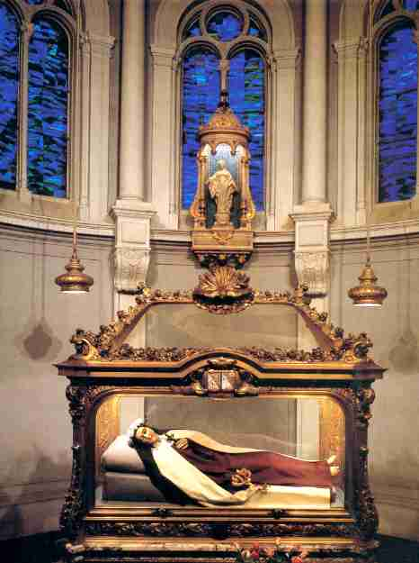
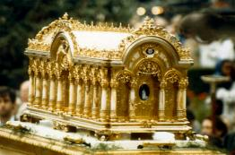
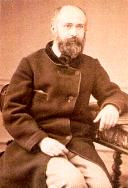

SINAIS SOBRENATURAIS APÓS SUA MORTE
 Assim que Teresinha entregou a sua
bendita alma a
Assim que Teresinha entregou a sua
bendita alma a
DEUS, seu semblante foi envolvido pela alegria dos
últimos momentos, mostrando um inefável sorriso. Logo começaram a ocorrer fatos
extraordinários na Comunidade Religiosa. Uma irmã que tinha anemia cerebral, foi
beijar os pés da "Santinha" durante o velório e propositalmente, com fé
e decisão neles encostou a cabeça. Ficou instantaneamente curada. Outra Religiosa
ao entrar na cela vazia da Santa, sentiu um agradável perfume de violetas, não
havendo ali nenhuma espécie de flor. No caixão, as irmãs colocaram uma palma
nas mãos de Teresinha. Treze anos mais tarde, quando o caixão funerário foi
aberto para proceder a primeira exumação, a palma estava perfeitamente
intacta.
No sábado e domingo seguinte ao
dia do falecimento, afluiu
às grades do Coro, uma grande
quantidade de pessoas, para visitá-la e prestar-lhe a última homenagem, ao
mesmo tempo em que buscavam uma recordação de Teresinha. Com esta
finalidade, muitas pessoas levaram terços, medalhas e até jóias, para tocar
o corpo da Santa, transformando aqueles objetos em preciosidades, que sem
dúvida foram guardadas diligentemente com fé e veneração. No meio da
aglomeração, uma criança de 10 anos despertou a atenção de todos, ao dizer
que estava sentindo um maravilhoso perfume de açucenas, naquele local onde só
existiam flores artificiais que ornavam o caixão.

A PROMESSA DA SANTA
 “Todos
que me invocarem receberão a minha respostaâ€.(pág 314)
“Todos
que me invocarem receberão a minha respostaâ€.(pág 314)
Um traço importante
e de realce na devoção a Santa Teresinha, é a
intimidade que logo se
estabelece entre ela e seus devotos. Imediatamente ela passa a viver a vida deles,
intervém em seu benefÃcio nas menores particularidades, ajuda cada fiel a
vencer as dificuldades e os consola nas tribulações, travando com estas almas um
intercambio afetuoso e repleto de esperança na intervenção de DEUS. Conforme
a sua própria vontade, ela permanece próxima daqueles que a invocam, pois foi este
o meio admirável que encontrou "para passar a sua eternidade", ao mesmo tempo
no Céu e na Terra, semeando benefÃcios em quantidade, para a maior glória do
CRIADOR. Sobretudo, é notável em sua "Missão de Anjo dos Sacerdotes". O
Papa Bento XV aconselhava a um Padre:
“Invoque-a com fervor,
porque a vocação de Santa Teresinha é ensinar aos Padres, Amar
JESUSâ€.
BIBLIOGRAFIA
O pai de Teresinha chamava-se Luis José
Estanislau Martin
e sua mãe, Zélia Guérin. Ela nasceu MARIA FRANCISCA TERESA,
em Alençon, na França, no dia 2 de Janeiro de 1873 e era a caçula de uma
famÃlia com nove (9) filhos:
Maria Luisa,
Maria Paulina, Maria Leônia, Maria Helena (faleceu aos 4 anos e meio de idade), José Maria
Luis (faleceu aos cinco meses de vida), José Maria João Batista (faleceu antes
de completar nove meses de nascimento), Maria Celina, Maria Melânia Teresa
(falecida aos três meses de idade) e ela, Teresinha.
Em 9 de Abril de 1888 entrou
no Carmelo de Lisieux. Por isso mesmo, é carinhosamente chamada
de Teresinha de Lisieux.
Faleceu no dia
30 de Setembro de 1897, aos 24 anos de idade.
Foi canonizada
pelo Papa Pio XI, em 17 de Maio de 1925 e proclamada Padroeira das Missões em
14 de Dezembro de 1927.
Por ocasião da
celebração do Centenário de sua morte, em 19 de Outubro de 1997, o Papa João
Paulo II a declarou “Doutora da Igrejaâ€.
A Igreja
celebra anualmente sua Festa no dia 1º de Outubro.
Próxima Página
Página Anterior
Retorna ao Ãndice